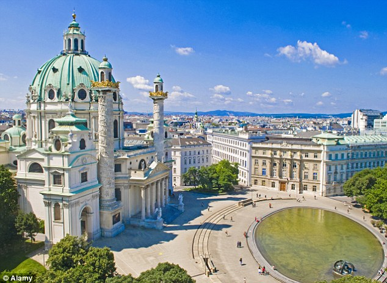
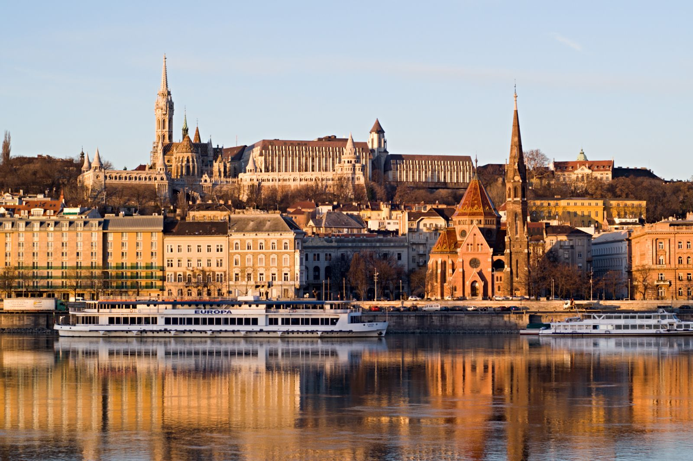
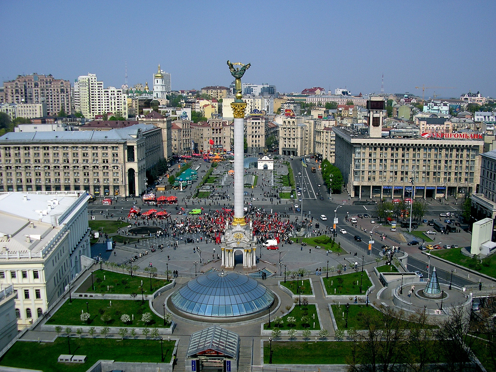
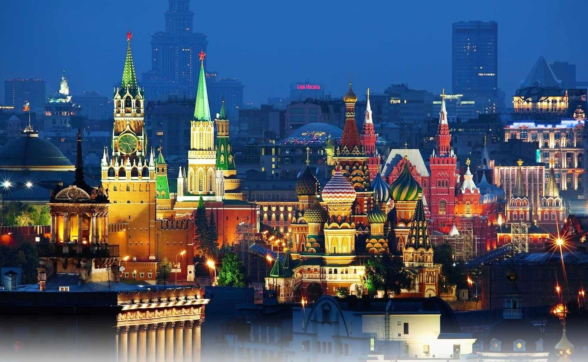

Vienna
 Select to Vienna, the capital of European culture, explore the glorious history of this city. Visit the rustic museums, admire the incredible architecture and the city skyline. Everything with you in mind.
Budapest
 Take a trip to the capital of Hungary - Budapest. Discover stunning architecture and wonderful character of this city. Feel the atmosphere of this beautiful city and imagine life in it on a daily basis.
Kiyv
 Kiev one of the most picturesque towns in Eastern Europe. Noteworthy for anyone who likes to travel. Beautiful architecture of historic buildings and stunning views of the city make it like this place.
Moscow
 Select to Moscow, one of the largest cities of Eastern Europe, Russians enjoy the culture, and the specific architecture. Meet nesting dolls, which are a symbol of Russia